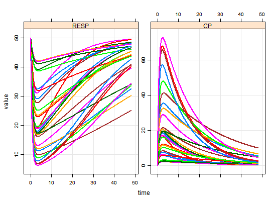
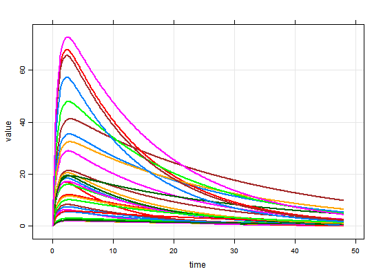
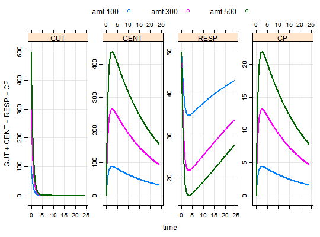
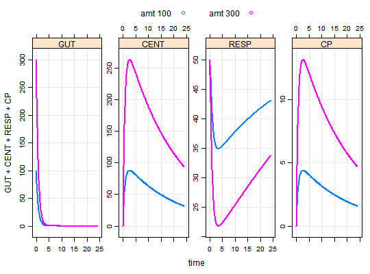
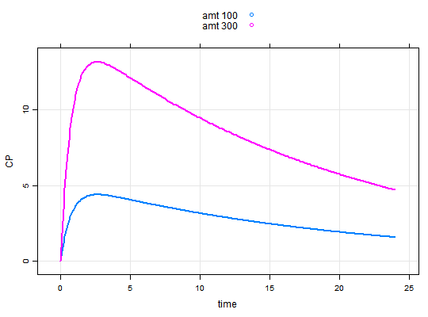

Run sensitivity analysis on model settings
Knobs can be parameter values or PK dosing items (e.g. amt). By design, all combinations of specified knob/values are simulated.
knobs(x, y, ...) # S4 method for mrgmod,missing knobs(x, y, ...) # S4 method for mrgmod,batch_mrgsims knobs(x, y, ...) # S4 method for batch_mrgsims as.data.frame(x, row.names = NULL, optional = FALSE, ...) # S4 method for batch_mrgsims,ANY knobs(x, y, ...) # S4 method for batch_mrgsims show(object)
Arguments
- x
- the model object
- y
- a
batch_mrgsimsobject - ...
- knobs: named numeric vectors that identify knob names and knob values for a batch run. See details.
- row.names
- passed to
as.data.frame - optional
- passed to
as.data.frame - object
- passed to show
Value
An object of class batch_mrgsims. Most methods for mrgsims objects also work on batch_mrgsims object.
Details
Valid knob names include: any parameter name (in param(mod)), time variables (start, end, delta), PK dosing items (amt, ii, rate, and others ...), and solver settings (atol, hmax, etc...).
Examples
#> Warning: cannot open compressed file 'C:\Users\devin\Documents\Repos\mrgsolve/project/housemodel.RDS', probable reason 'No such file or directory'#> Error in gzfile(file, "rb"): cannot open the connection#> Error: No valid knobs found.plot(out)out#> Model: demo.cpp #> Dim: 14430 x 5 #> Time: 0 to 48 #> ID: 30 #> ID time dose RESP CP #> [1,] 1 0.0 100 50.00 0.000 #> [2,] 1 0.1 100 49.53 1.053 #> [3,] 1 0.2 100 48.41 1.971 #> [4,] 1 0.3 100 46.95 2.770 #> [5,] 1 0.4 100 45.34 3.465 #> [6,] 1 0.5 100 43.70 4.068 #> [7,] 1 0.6 100 42.10 4.591 #> [8,] 1 0.7 100 40.58 5.043#> Error: No valid knobs found.plot(out)plot(out,CP~.)plot(out, CP~time|VC, groups=CL, lty=2)#> Error in eval(expr, envir, enclos): object 'CL' not foundout <- knobs(mod, amt=c(100,300,500), cmt=1) plot(out)out <- mod %>% knobs(amt=c(100,300), CL=c(1,3), VC=c(5,20), cmt=1) plot(out)plot(out, CP~.)out <- knobs(mod, CL=c(1,2,3))#> Error: No valid knobs found.out#> Model: demo #> Batch (head): #> ID amt cmt #> 1 1 100 1 #> 2 2 300 1 #> [ amt ] #> #> Head: #> ID time GUT CENT RESP CP amt cmt #> 1 1 0.0 100.00000 0.00000 50.00000 0.0000000 100 1 #> 2 1 0.1 87.80954 12.15937 49.72068 0.6079687 100 1 #> 3 1 0.2 77.10516 22.77582 49.03359 1.1387909 100 1 #> 4 1 0.3 67.70569 32.03773 48.10845 1.6018863 100 1 #> 5 1 0.4 59.45205 40.11053 47.05972 2.0055263 100 1 #> [ amt ]out <- knobs(mod, CL=c(1,2,3))#> Error: No valid knobs found.out#> Model: demo #> Batch (head): #> ID amt cmt #> 1 1 100 1 #> 2 2 300 1 #> [ amt ] #> #> Head: #> ID time GUT CENT RESP CP amt cmt #> 1 1 0.0 100.00000 0.00000 50.00000 0.0000000 100 1 #> 2 1 0.1 87.80954 12.15937 49.72068 0.6079687 100 1 #> 3 1 0.2 77.10516 22.77582 49.03359 1.1387909 100 1 #> 4 1 0.3 67.70569 32.03773 48.10845 1.6018863 100 1 #> 5 1 0.4 59.45205 40.11053 47.05972 2.0055263 100 1 #> [ amt ]